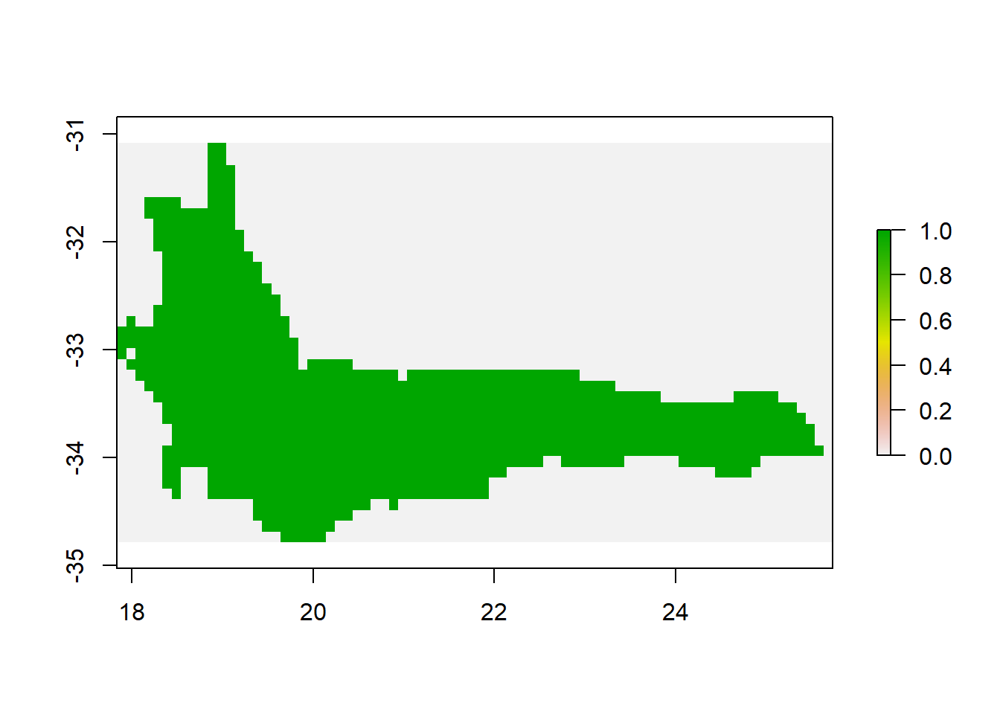

Spatial pattern of plant species’ biodiversity in South Africa
Qianru Liao
2018年11月12日
Introduction
Fuguring out the pattern of distribution of species richness and the pattern spatial turnover of plant species are necessary for identifying target areas in species conservation. And this pattern can not be divorced from spatial scale. Comparing the pattern in different spatial scale will give a conprehensive imformation for helping conserving plant species.
Problem / Question
1.What is the pattern of bird species richness in South Africa? 2.what is the spatial pattern of alpha diversity of plant species in South Africa? 2.What is the spatial pattern of beta diversity of plant species in South Africa?
Materials and Methods
Method
*This study will use the following packages to answer the questions above. tidyverse rgdal sf foreach doParallel registerDoParallel(2)
Import Data Sets
library(tidyverse)## -- Attaching packages ------------------------------------------------------------------ tidyverse 1.2.1 --## √ ggplot2 3.0.0 √ purrr 0.2.5
## √ tibble 1.4.2 √ dplyr 0.7.6
## √ tidyr 0.8.1 √ stringr 1.3.1
## √ readr 1.1.1 √ forcats 0.3.0## -- Conflicts --------------------------------------------------------------------- tidyverse_conflicts() --
## x dplyr::filter() masks stats::filter()
## x dplyr::lag() masks stats::lag()library(rgdal)## Loading required package: sp## rgdal: version: 1.3-6, (SVN revision 773)
## Geospatial Data Abstraction Library extensions to R successfully loaded
## Loaded GDAL runtime: GDAL 2.2.3, released 2017/11/20
## Path to GDAL shared files: C:/Users/air/Documents/R/win-library/3.5/rgdal/gdal
## GDAL binary built with GEOS: TRUE
## Loaded PROJ.4 runtime: Rel. 4.9.3, 15 August 2016, [PJ_VERSION: 493]
## Path to PROJ.4 shared files: C:/Users/air/Documents/R/win-library/3.5/rgdal/proj
## Linking to sp version: 1.3-1library(sf)## Linking to GEOS 3.6.1, GDAL 2.2.3, proj.4 4.9.3library(foreach)##
## Attaching package: 'foreach'## The following objects are masked from 'package:purrr':
##
## accumulate, whenlibrary(doParallel)## Loading required package: iterators## Loading required package: parallelregisterDoParallel(2)
library(fasterize)##
## Attaching package: 'fasterize'## The following object is masked from 'package:graphics':
##
## plotlibrary(sp)
library(raster)##
## Attaching package: 'raster'## The following object is masked from 'package:dplyr':
##
## select## The following object is masked from 'package:tidyr':
##
## extractlibrary(vegan)## Loading required package: permute## Loading required package: lattice## This is vegan 2.5-2import shapefiles from each of files
datadir="C:/Users/air/Desktop/projectR/"
files=data.frame(
path=list.files(datadir, recursive=T, pattern="shp$"),stringsAsFactors = F)%>%
mutate(file=basename(path),
species=gsub(".shp","",file),
family=gsub("[/].*$","",path))
all_species = foreach(i=1:nrow(files),.combine=rbind,.packages = c("dplyr","sf")) %dopar% {
sp=read_sf(file.path(datadir,files$path[i]))%>%
select(-1)%>%
mutate(family=files$family[i],species=files$species[i]) %>% st_set_crs(4326)
#return(st_crs(sp))
return(sp)
}Spatial Richness Map
cfr_bbox=st_bbox(all_species)
r <- raster(
xmn=cfr_bbox$xmin,
xmx=cfr_bbox$xmax,
ymn=cfr_bbox$ymin,
ymx=cfr_bbox$ymax,
res=0.1)
raster_spatial_richness<- fasterize(all_species, r, background = 0, fun = "sum", by = NULL)
plot(raster_spatial_richness)
Spatial pattern of alpha biodiversity
raster_alphadiversity<- fasterize(all_species, r, background = 0, by = "species")
raster_alphadiversity1<- fasterize(all_species, r, background = 0, by = NULL)
all_alphadiversity=as.data.frame(raster_alphadiversity)
library(vegan)
simpson<- all_alphadiversity %>%diversity(index="simpson")
`values<-`(raster_alphadiversity1, simpson)## class : RasterLayer
## dimensions : 37, 79, 2923 (nrow, ncol, ncell)
## resolution : 0.1, 0.1 (x, y)
## extent : 17.83333, 25.73333, -34.78179, -31.08179 (xmin, xmax, ymin, ymax)
## coord. ref. : +proj=longlat +datum=WGS84 +no_defs
## data source : in memory
## names : layer
## values : 0.8333333, 1 (min, max)plot(raster_alphadiversity1)
Conclusion
What have you learned? Are there any broader implications?